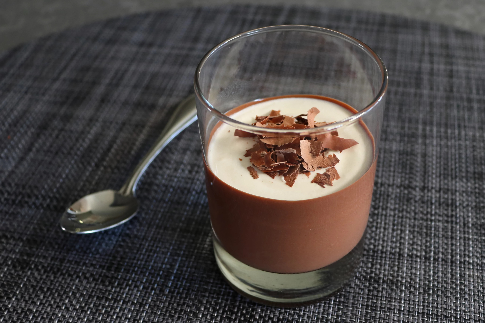

Home
Chocolate Puddino

Description
Perfect for Valentine's Day, this rich and delicious chocolate pudding is made with a classic Italian method that they call "budino." The pudding has a glorious texture--firm enough to stay on the spoon and hold its shape, but at the same time, soft, smooth, and silky. It's a perfect balance between intense chocolate flavor, with just the right amount of sweetness, topped with a soft whipped cream topping that elevates it to a whole new level of amazingness!
Ingredients
Puddings:
- 8 ounces dark chocolate chips
- 1 pinch salt
- 1 pinch cayenne pepper
- 6 large eggs
- ⅓ cup white sugar
- 1 cup whole milk
- 1 ¼ cups heavy cream
- ¼ teaspoon vanilla extract
- 1 tablespoon unsalted butter
Toppings
- ¼ cup heavy cream, or to taste
- ⅛ teaspoon vanilla extract, or to taste
- 2 tablespoons shaved dark chocolate, or to taste
Directions
- Combine chocolate chips, salt, and cayenne in a heat-proof measuring cup; set aside.
- Separate eggs by cracking one egg into your hand over a bowl. Open your fingers slightly and gently jiggle your hand until the egg white falls into the bowl below. Transfer the yolk to a skillet. Repeat with remaining eggs. Reserve egg whites for another use.
- Add sugar, milk, and cream to egg yolks. Whisk thoroughly, breaking egg yolks first, until well combined.
- Place skillet on the stove over medium or medium-low heat. Cook, stirring constantly with a silicone spoon, until very hot and thick enough to coat the back of the spoon, about 5 minutes. An instant-read thermometer should read at least 175 degrees F (79 degrees C). Remove from the heat.
- Set a fine sieve over the bowl of reserved chocolate. Strain the custard sauce into the chocolate and let sit for 2 minutes. Whisk until chocolate has melted and custard sauce is smooth and shiny, about 2 minutes. Add vanilla and butter; stir until butter has melted, about 1 minute.
- Pour warm custard sauce into 6 serving glasses. Tilt each glass and rotate it around so the warm chocolate coats another 1/2 inch of the glass. Cover with plastic and place in the refrigerator until completely chilled, at least 3 to 4 hours.
- Combine cream and vanilla extract for topping in a metal bowl and whisk until thickened; make sure no peaks form. Spoon cream into the glasses, then tilt and twirl to coat the sides a bit.
- Garnish with shaved chocolate and serve.